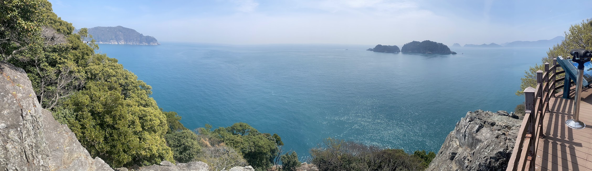

Hiking Naedo Island with My Family

A Personal Note
During a three-day trip to Geoje-do, an island at the southern tip of the Korean peninsula, we decided to visit Naedo Island after spending the previous day at Naedo's much more popular neighboring island, Oedo. The gardens at Oedo were beautiful, but the place was a little too manicured and intentional for my family's taste. It reminded me a bit of Hearst Castle in California - beautiful, but also overly ostentatious, with inescapable, piped-in classical music throughout the entire grounds, with an inclination for ancient Greek statues and architecture, which seemed out of place in a relatively remote region of South Korea. When I asked my 12-year old son what he thought about it on the ferry ride back to the main island, he said, "It was okay, but I kind of wish we could've gone on a regular hike somewhere in nature."
I looked at this great blog post, , where a traveler reviewed several islands in the Geoje area, and found a review for Naedo Island that stood out for me because, both refreshing and grounding. It wasn’t about rushing from one attraction to another. It was more about taking our time, walking together, noticing the views, and enjoying the feeling of being somewhere a little special without needing anything too elaborate.What I appreciated most was the sense that the experience encouraged a slower pace. The ferry ride, the paths, the gardens, the coastal scenery — everything seemed to invite a kind of quiet attention that can get lost in more crowded or commercialized destinations.
Traveling with family often means balancing logistics, energy levels, and expectations, but this was the kind of place that made that easier. It felt scenic and memorable without feeling overwhelming.
Why It Felt Conscientious
- The experience encourages walking and lingering rather than rushing.
- Visiting places like this can help support local tourism economies in a more direct way.
- It reminded me that meaningful travel does not always need to be flashy or heavily commercial.
- It was the kind of outing where appreciation for the place itself became the main event.
Useful Tips
- Make sure to get to the ferry about ten minutes before departure.
- Bring water and snacks or a lunch unless you want to eat at the one cafe on the islandw.
- Wear comfortable walking shoes and be prepared for a few steep climbs.
Photo Gallery